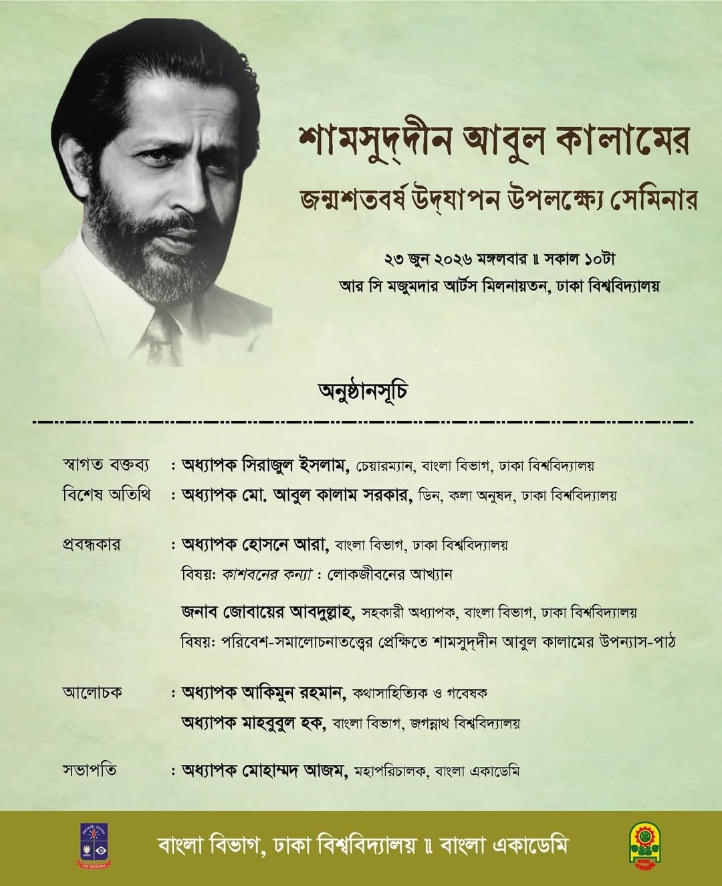

Zobayer Abdullah
Home
Publications
Research & infrastructure
Media & gallery
CV
Contact
Events, conversations, and public scholarship
Media & gallery
Select an image to see its full view and details.
Mahfuz Arefin Siddique memorial seminar
13 June 2026 · Pabna University of Science and Technology, Pabna
Shamsuddin Abul Kalam seminar
23 June 2025 · University of Dhaka, Dhaka

Shamsuddin Abul Kalam seminar announcement
23 June 2025 · University of Dhaka, Dhaka
Ek Rode Boishakhi discussion
7 May 2025 · University of Dhaka, Dhaka
Television conversation
March 2025 · Bangladesh Television, Dhaka
Amar Ekushey Book Fair 2024
15 February 2024 · Bangla Academy, Dhaka
×